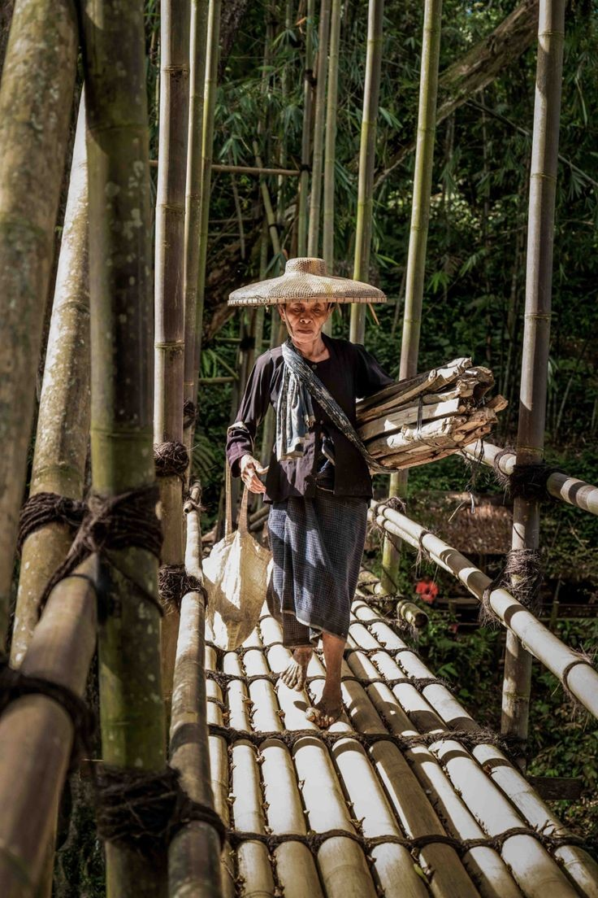
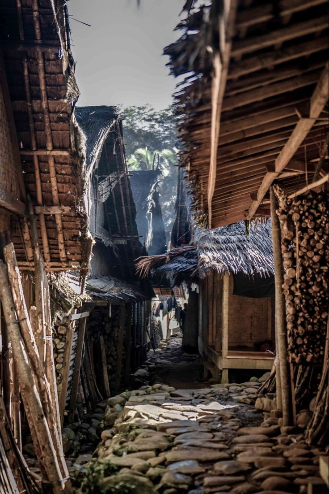
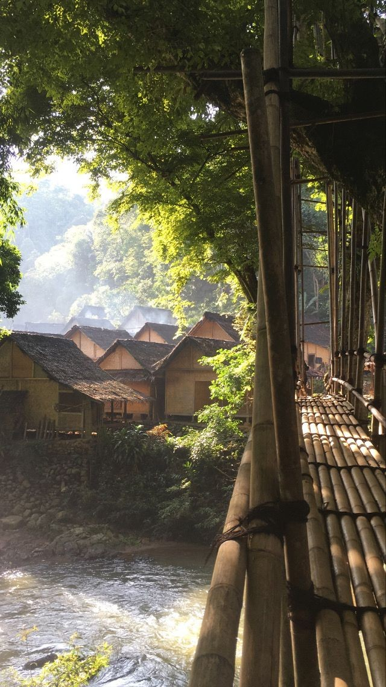

"Bukan sekadar perjalanan, tapi sebuah kepulangan pada jati diri yang sederhana."

"Berjalan menyusuri jembatan bambu ini menyadarkan saya betapa hebatnya harmoni antara manusia dan alam."

"Malam tanpa gawai mengubah cara saya berkomunikasi. Kami bercerita dan tertawa dengan tulus di bawah temaram obor."

"Mandi di sungai tanpa sabun kimia, merasakan aliran air yang sangat murni. Benar-benar membasuh raga dan jiwa."
"Keramahan tuan rumah membuat kami merasa seperti mengunjungi keluarga sendiri. Terima kasih Ulin Ka Baduy."